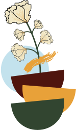

Infographic
Transforming raw data into visually appealing graphics using research and mind mapping techniques. The final product created using thumbnails and roughs modified and finalized using Illustrator to produce a dynamic graphic information piece.
Newsletter
Designing a detailed four-page newsletter in InDesign. A newsletter is a printed or electronic report containing news concerning the activities of a business or an organization that is sent to its members, customers, employees or other subscribers. Newsletters generally contain one main topic of interest to its recipients.
Symbol Design
Creating and designing symbols on the allotted theme using extensive research, mind mapping, experimental sketching and colour combinations; finally creating the symbol in Illustrator.
Wanna share your thoughts on my work?
